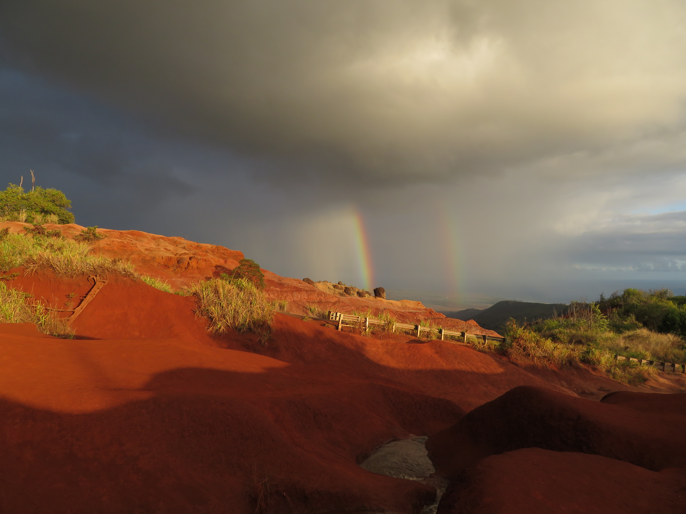

Waimea Canyon View

Canyon Lookout
Waimea Canyon on the island of Kauai is simply beautiful, and with its colorful scenery and its gorgeous views, it's no wonder why it's called the Grand Canyon of the Pacific and one of the best places to visit in all of Hawaii.
Waimea Canyon View
Canyon Lookout
The most popular and my favorite thing about Waimea Canyon were simply the overlooks. These viewpoints contain stunning views of the canyon as well as the Waipo'o Falls in the distance.

Waipo'o Falls

Canyon Lookout

Canyon Lookout
Besides the views of the gorgeous canyon, the other cool place at Waimea Canyon is the Red Dirt Waterfall area, which looks otherworldly up close. This is especially during the evening hours, when the landscape turns into a fiery red with the magical canyon scenery in the backdrop.

Red Dirt Waterfall Area

Red Dirt Waterfall Area + 2 Rainbows

Red Dirt Waterfall Area + 2 Rainbows